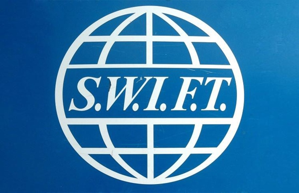

2014-11-29 01:27:00
英文裡的SWIFT這個字，可以指“燕子”，也可以是“快速”。在1973年，歐美的銀行因為使用電傳打字機（Telex）來做轉賬匯兌的互相通訊必須由打字員手動操作，速度慢、錯誤多、不安全、認證難，決定聯合起來雇用一家英國的電腦公司，替他們開發出一套新的數位網絡。這個聯盟，就特意取了縮寫是SWIFT的名字，叫“Society for Worldwide Interbank Financial Telecommunication”，中文是“環球銀行金融電信協會”。金融這行業，處理的是虚擬的數字，特别適合電腦化和網絡化，所以很快全球的大小銀行都加入了SWIFT。原本SWIFT用的是X.25的WAN（Wide Area Network）標準，後來在本世紀初改為TCP/IP和XML，叫做SWIFTNet。現在，任何銀行與銀行之間的通訊，基本上都是用了SWIFTNet。

SWIFT的商標。
SWIFT在籌劃時，歐洲經濟共同體（EEC，European Economic Community，歐盟的前身）已經把大部份機構設在布魯塞爾（Brussels），所以SWIFT也設在那裡，成為在比利時注册的一個非營利組織。在2006年，美國政府被揭發出自2001年起，强迫SWIFT將所有的銀行通訊資料交給CIA、NSA和美國財政部。這當然是違反比利時和歐盟法律的，但是美國是大哥，歐盟抓包了紅杏出墙也不能阻止，只能要求SWIFT把歐盟内部的通訊保護起來。結果談了八年，美國還是不准，所以所有的資料到現在還是繼續源源不斷地流入美國政府。到了2012年，歐洲人發現，美國甚至可以隨意攔截任何匯兌交易款項。例如有一筆丹麥人匯給德國商店買古巴雪茄的銭，就被没收了；也就是美國制裁古巴的國内法，可以通過SWIFT而管制歐洲人自己的生意。結果也是在歐盟鬧了一陣以後，什麼辦法都没有，這就是當大流氓的小弟的悲哀。
美國連歐盟公民的基本隱私權和財產權都不在乎，其他國家的權利當然更可以踩在脚下。2012年二月，美國參議院下令SWIFT把伊朗的銀行踢出去，到三月SWIFT就乖乖聽命，從此伊朗的銀行對外的作業基本停頓。至今這仍是伊朗所受的歐美制裁中，最不方便的之一。每次伊朗和美國談判，取消SWIFT的制裁，也一直都是列在伊朗要求書的第一頁。所以今年輪到俄國受到歐美的制裁後，美國、英國和波蘭都公開要求依伊朗的先例，把俄國的銀行踢出SWIFT，若不是因為德國和意大利都有很多投資在俄國，因而强烈反對，現在必然已實現了。俄國人也知道金融業的重要性，不能坐以待斃；尤其SWIFT在俄國的分部，叫ROSSWIFT，是全球僅次於美國最忙碌的銀行網，如果忽然垮了，後果不堪設想。所以在2014年十一月11日，俄國中央銀行副總裁Ramilya Kanafina宣布將建立自己的銀行網，由俄國的National Payments Council主持，預計明年五月正式運作。
其實SWIFT的短訊，一次只有幾千位元，每天平均也只有1500萬個短訊。以目前網絡科技來說，這只算是一個很小規模的工程，真正的工作是在政治外交上的。如果SWIFT對俄實施制裁，俄國有了自己的銀行網，它的銀行雖然仍然可以相互做交易，但是與境外的，例如中國的銀行還是無路可通。而顯然除美國和他的忠狗之外，没有國家喜歡看到如此重要的國際公共事業完全受美國人的監控和擺布。所以我預期中共將加入俄國的新銀行網，而其他的金磚國家和第三世界的小國，也會陸續加入。所謂得道多助，失道寡助，美國濫用IMF和世界銀行，已經使得中共創立的亜投銀和金磚銀行一呼百應；現在SWIFT也要步其後塵。美國的世界霸權，就像一座年久失修的堡壘，一塊一塊地垮下來了。